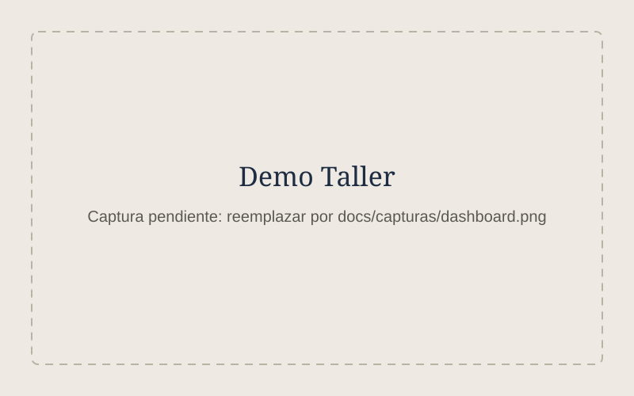
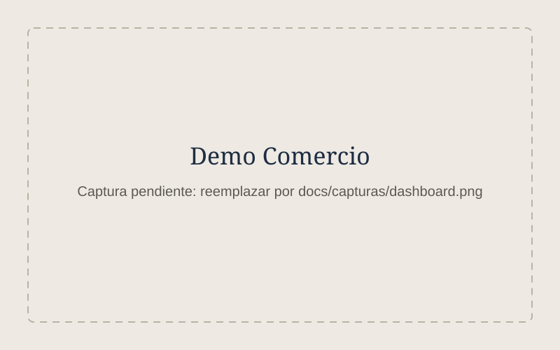

Diagnóstico gratis
$0
Platicamos 30 minutos sobre cómo trabaja tu negocio y te digo qué conviene ordenar primero. Sin compromiso.
Pedir diagnósticoControla tu inventario, ventas, órdenes y citas desde el celular, sin libretas ni Excel complicados.
El inventario vive en la cabeza de alguien o en una libreta, y los faltantes se descubren tarde.
Hay que buscar precios, hacer cuentas y armar el documento cada vez. Mientras, el cliente cotiza en otro lado.
Los pendientes están repartidos entre mensajes, papelitos y la memoria. Alguno siempre se pasa.
Al final de la semana o del mes no hay un número claro, solo una idea aproximada.
$0
Platicamos 30 minutos sobre cómo trabaja tu negocio y te digo qué conviene ordenar primero. Sin compromiso.
Pedir diagnósticodesde $2,500
Un sistema en Google Sheets, usable desde el celular, para llevar inventario, ventas o citas.
desde $5,000
Una aplicación web para tu forma de trabajar.
$300 – $500 al mes
Opcional. Ajustes, dudas y mantenimiento después de la entrega. Lo puedes cancelar cuando quieras.
Precios en pesos mexicanos. El precio final se acuerda por escrito antes de empezar y no cambia.
Dos sistemas de ejemplo que puedes abrir y usar. Los datos son de prueba.

Cotizaciones, órdenes de trabajo, inventario de refacciones y tablero de resultados.
Probar demo: Taller (se abre en otra pestaña)
Punto de venta, inventario con caducidades, reabastecimiento y reportes de ventas.
Probar demo: Comercio (se abre en otra pestaña)La primera carga puede tardar un minuto porque el servidor gratuito se “despierta”.
Me cuentas cómo trabajas hoy. Si puedo ayudarte, te digo cómo; si no, también.
Te envío por escrito qué voy a hacer, cuánto cuesta y cuándo lo entrego. Sin sorpresas.
Lo dejamos funcionando con tus datos y te enseño a usarlo a ti y a tu equipo.
Ajustes incluidos el primer mes. Después, soporte mensual solo si lo necesitas.
Soy estudiante de último año de Ingeniería Industrial. He trabajado en producción y mejora continua en empresas manufactureras, donde aprendí a medir, ordenar procesos y quitar pasos que no sirven.
Por eso, antes de programar, entiendo cómo trabaja tu negocio. Un sistema solo vale la pena si te ahorra tiempo y te da números claros.
No. El control básico usa Google Sheets, que es gratis con una cuenta de Google. Los sistemas a la medida se usan desde el navegador; si requieren algún servicio de pago, te lo digo antes en la propuesta.
Sí. Todo se diseña para usarse primero desde el celular, y también funciona en computadora o tableta.
El primer mes de ajustes está incluido. Después puedes contratar el soporte mensual o pedir cambios puntuales con precio acordado antes.
Tus datos quedan en tu propia cuenta (por ejemplo, tu Google Drive), con acceso solo para las personas que tú autorices. No los comparto ni los uso para nada más.
Un control básico suele quedar en una o dos semanas. Un sistema a la medida, de tres a seis semanas según lo que incluya. La fecha queda por escrito en la propuesta.
Escríbeme por WhatsApp y cuéntame a qué se dedica tu negocio. Te respondo en el horario de atención.
Atiendo en persona en estas zonas y en línea en cualquier lugar.